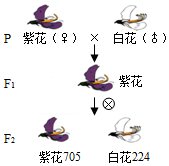

2017年北京市海淀区中考生物试题 · 选择题 第31、32、33、34、35题
31. 下列各组结构与功能的对应关系不合理的是（ ）
A. 细胞核----遗传信息库B. 叶绿体----光合作用的场所
C. 液泡----呼吸作用的场所D. 细胞壁----支持和保护作用
32. 下列关于人体心脏的叙述，不正确的是（ ）
A. 构成心脏的组织主要是肌肉组织
B. 心脏内有四个腔，左右两部分不相通
C. 由心脏输送出去的血液都是动脉血
D. 一次心脏跳动包括心脏的收缩和舒张
33. 亲代的许多性状能在子代身上体现，主要原因是（ ）
A. 亲代把性状传递给子代
B. 亲代把控制性状的基因传递给子代
C. 子代与亲代生活在一起，长相就会相像
D. 亲代把细胞核中所有基因传递给子代
34. 2002年，我国自主完成的首批成年体细胞克隆牛在山东省曹县五里墩降生．用同一只成年奶牛的体细胞克隆出来的5只小牛，它们几乎一模一样，这是因为（ ）
A. 它们的生活条件相同B. 它们的毛色和花纹相同
C. 它们的遗传物质相同D. 它们的细胞结构相同
35. 如图为豌豆杂交实验的遗传图解．下列叙述不正确的是（ ）

A. 豌豆 紫花和白花是一对相对性状
紫花和白花是一对相对性状
B. 花的紫色对于白色是显性性状
C. 子一代细胞中有来自双亲的基因
D. 子一代形成子二代过程中需要人工授粉